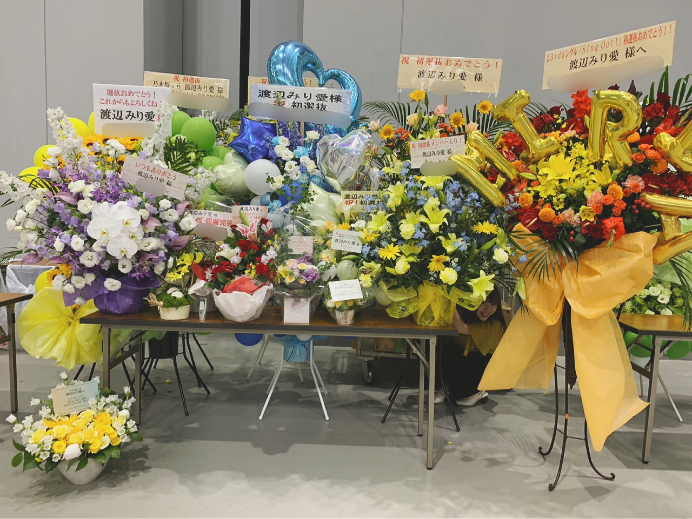
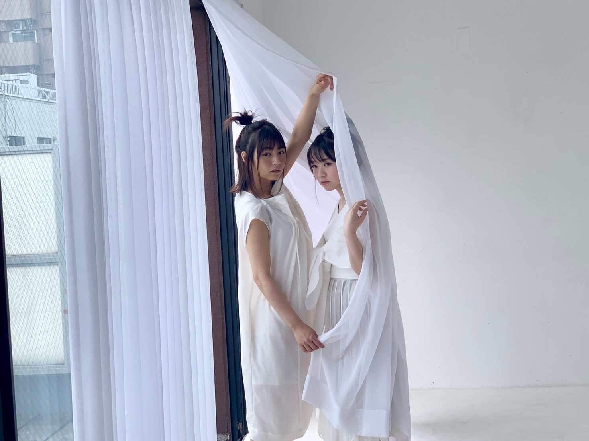

2019/0610Monヨーソロー
こんにちは

先日は仙台にて個別握手会でした。
遠くから時間かけてお越しくださった皆様
そしてなかなか東京などのイベントでは会えず
やっと会えた東北の皆様！
沢山の方が来てくださいました。

お花もこんなに沢山、、、(T_T)
簡単にこの言葉言うものではないと思うけど
皆さんが大好きです！
「お花あげられなくてごめんね、、」
と言ってきてくださる方が時々いるのですが
気持ちの表し方は決してお花だけではないですし
握手会に来られない方でも、
コメントで想いを伝えてくれたりと、
皆さんの気持ちって同じくらい充分に伝わっているし
すっごく嬉しいから、
私を見つけてくれて応援してくれてるだけで
本当に幸せなんです(^ ^)

羊ヘアー？とやらをやってみたけれど
片方しか写ってないね。笑
ありがとうございました！
そして昨日は4thアルバムの特典イベントでした
大縄跳び、玉入れ、卓球、黒ひげ危機一発
お越しくださった皆様ありがとうございます！
やるものが全て新鮮で楽しかった〜
大縄跳びは圧勝しましたね！
玉入れは私が小さ過ぎて役立たずだったかも、笑
ごめんなさい〜、笑
卓球は皆さんと握手会でお話ししてる時とは
また違う雰囲気を見れて何だか新鮮でした
黒ひげ危機一発は安定に飛ぶのハラハラするし
とてもいい思い出です(^ ^)
今日の朝、見事に全身筋肉痛でした( ◠‿◠ )
大運動会とか楽しそう、やってみたいですね〜


B.L.Tは宇宙兄弟で載ってます。
楽しかった、常に目線。真面目に。でした。笑
B.L.Tさんの方でオフショットムービーが
見られると思いますので
そちらも是非チェックして下さい！
みり愛
2019/06/10 21:06
コメント(491)
宇宙兄弟のオフショットムービーイチャイチャしすぎ(笑)
席も隣座るみたいだし、一緒に選抜として活動出来てるのが楽しそうだね！
これからも宇宙兄弟は永遠にイチャイチャしててください！(笑)
席も隣座るみたいだし、一緒に選抜として活動出来てるのが楽しそうだね！
これからも宇宙兄弟は永遠にイチャイチャしててください！(笑)
みり愛お疲れさま＼(^^)／
スペイベ行きたかったー(;_;)楽しかったみたいでよかった♪
ツアー最終日のチケット取れたよ！
みり愛の応援を現地でできる＼(^^)／
今からめっちゃ楽しみ！
どこにいてもみり愛を見つけるからね！
みりり委員会No.31 マアム師匠より( ・∇・)
スペイベ行きたかったー(;_;)楽しかったみたいでよかった♪
ツアー最終日のチケット取れたよ！
みり愛の応援を現地でできる＼(^^)／
今からめっちゃ楽しみ！
どこにいてもみり愛を見つけるからね！
みりり委員会No.31 マアム師匠より( ・∇・)
みり愛ちゃん！！
仙台の握手会おつかれ！！特典イベント行けなかったよ〜
仙台の握手会おつかれ！！特典イベント行けなかったよ〜
ブログ更新ありがとう！
ぺいです
宮城の個握お疲れ様！個人的にはたくさん話せたけどまだ足りないなぁって感じ
23枚目は最初で最後ということで、、、、
これから数ヶ月間、ドイツ留学のための英語の試験勉強に励むよ(><)
(あとは趣味のスプラトゥーンに)
今日でさえもうみり愛ロスなのにこれから会えなくて耐えられるかな。
スペイベもお疲れ様、1度は行ってみたいなぁスペイベ
ぺい
ぺいです
宮城の個握お疲れ様！個人的にはたくさん話せたけどまだ足りないなぁって感じ
23枚目は最初で最後ということで、、、、
これから数ヶ月間、ドイツ留学のための英語の試験勉強に励むよ(><)
(あとは趣味のスプラトゥーンに)
今日でさえもうみり愛ロスなのにこれから会えなくて耐えられるかな。
スペイベもお疲れ様、1度は行ってみたいなぁスペイベ
ぺい
ブログありがとう！
特典イベント落ちて行けなかったー
でも6/30個握久しぶりに行きます！！
めちゃくちゃ緊張するけども、なんとか楽しく話せるよう
頑張って考えときます
特典イベント落ちて行けなかったー
でも6/30個握久しぶりに行きます！！
めちゃくちゃ緊張するけども、なんとか楽しく話せるよう
頑張って考えときます
みり愛ちゃん更新ありがとう！！
一枚目の写真可愛すぎる！！！
天使かよ！！！
どんどん可愛いくなるな～(^^)/
スペイベめっちゃ羨ましいな～(..)
人生で1回は行ってみたいな……
今実習中でめっちゃ忙しいけどみり愛ちゃんみて頑張る！！
モバメもありがとね( *´艸｀)
忙しさ終わったら握手会にいけるように願ってる！！
また更新お願い！！
一枚目の写真可愛すぎる！！！
天使かよ！！！
どんどん可愛いくなるな～(^^)/
スペイベめっちゃ羨ましいな～(..)
人生で1回は行ってみたいな……
今実習中でめっちゃ忙しいけどみり愛ちゃんみて頑張る！！
モバメもありがとね( *´艸｀)
忙しさ終わったら握手会にいけるように願ってる！！
また更新お願い！！
ブログ更新ありがとう！
毎日お疲れ様です！
京都の握手会いくから今から楽しみ♪♪♪
あと1ヶ月くらいそのために頑張ります！
毎日お疲れ様です！
京都の握手会いくから今から楽しみ♪♪♪
あと1ヶ月くらいそのために頑張ります！
雑誌みり愛ちゃんいっぱいで嬉しい、可愛いだいすき
みり愛ちんブログ更新ありがとう！！！
早く会いたいよ〜可愛いよ〜しんどいよ〜笑
スペイベ楽しそうでなによりです、ちっちゃいのに玉入れ頑張ってる姿見たかったな笑、いつか行きたい
体に気をつけてね、応援しとります
りか
みり愛ちゃんブログ更新ありがとうー！
アルバムイベント行きたかったなあ。。
筋肉痛お大事に(？)笑
アルバムイベント行きたかったなあ。。
筋肉痛お大事に(？)笑
握手会お疲れ！
みりあちゃん変わらず可愛い
BLTの宇宙兄弟きいちゃんと一緒だったのみりあちゃんだったのね
BLTの宇宙兄弟きいちゃんと一緒だったのみりあちゃんだったのね
みり愛ずっと応援してるーわーうおー
みりあちゃーーーーーん
ブログ更新ありがとぉ
待ってたよ～
握手会お疲れ様でーす
俺も行きたかった～
Sing Out！の全握は行くから待ってて～
これからの活躍も期待してます
頑張って
ブログ更新ありがとぉ
待ってたよ～
握手会お疲れ様でーす
俺も行きたかった～
Sing Out！の全握は行くから待ってて～
これからの活躍も期待してます
頑張って
ブログ更新ありがとう！
全国ツアー当たったよ！
これでまた今年の夏もキレッキレのダンスを踊るみり愛が見れると思うと楽しみでしかないです！
今はツアーのリハとかで忙しいと思うけど体調管理には気をつけてね！
では！
全国ツアー当たったよ！
これでまた今年の夏もキレッキレのダンスを踊るみり愛が見れると思うと楽しみでしかないです！
今はツアーのリハとかで忙しいと思うけど体調管理には気をつけてね！
では！
お疲れ様です
こんばんわ〜
自分が出したお花が推しのブログに乗るの夢だったんで嬉しいですねぇ
ご協力頂いた方たちには感謝しかないです☺️
半年ぶりに握手会に行かさせていただきました。
みり愛ちゃんに会うのも久しぶりだったのと、みり愛推しの方達とも久しぶりにあえて存分に楽しめました
昔の写真で遊んでごめんなさい笑
でも楽しかったでしょ？(ドヤ顔)
天使みたいな服装は天にも登る可愛さでした。
多分天使じゃないんだろうけど(1枚目の画像ね)
6/30の握手会も行けたんですけど、行けることがわかってみり愛ちゃん取ろうとしたら売り切れてて(嬉しいこと)レーンの外から見守ろうと思います。
次のシングルは絶対に3会場行こうと思います！
んじゃまたね〜
こんばんわ〜
自分が出したお花が推しのブログに乗るの夢だったんで嬉しいですねぇ
ご協力頂いた方たちには感謝しかないです☺️
半年ぶりに握手会に行かさせていただきました。
みり愛ちゃんに会うのも久しぶりだったのと、みり愛推しの方達とも久しぶりにあえて存分に楽しめました
昔の写真で遊んでごめんなさい笑
でも楽しかったでしょ？(ドヤ顔)
天使みたいな服装は天にも登る可愛さでした。
多分天使じゃないんだろうけど(1枚目の画像ね)
6/30の握手会も行けたんですけど、行けることがわかってみり愛ちゃん取ろうとしたら売り切れてて(嬉しいこと)レーンの外から見守ろうと思います。
次のシングルは絶対に3会場行こうと思います！
んじゃまたね〜
可愛い〜 握手会楽しみ！
握手会楽しみ！
みり愛ちゃんブログ更新有難う
宮城の握手会ではニコ生のタイチ君がお世話になりました(^人^)
基本出不精なのに、みり愛ちゃんが選抜入りしてくれたおかげです( ^ω^ )
本当はワタスも連番したかったですが、握手券取れませんでした(/_;)
でも今度の握手会ではレーンにお邪魔しますね( ^ω^ )
宮城の握手会ではニコ生のタイチ君がお世話になりました(^人^)
基本出不精なのに、みり愛ちゃんが選抜入りしてくれたおかげです( ^ω^ )
本当はワタスも連番したかったですが、握手券取れませんでした(/_;)
でも今度の握手会ではレーンにお邪魔しますね( ^ω^ )
みり愛ちゃんブログありがとう！
仙台個握ありがとうございました！初選抜のシングルということで今回、お花を贈らせて頂きました！明るいをテーマにお花を作ってもらい、お祝いと日頃の感謝を込めました。少しでも気持ちが届いていたら嬉しいです。
握手会でやっていた羊のような髪型！似合ってました！またどこかで機会があればやって欲しいなと！
みり愛ちゃんと話す時間は本当に幸せです。笑顔になれるんですよ！会った瞬間！早く会いたいです。
ほんとにいつもありがとう。体調に気をつけてお互い頑張りましょう！
仙台個握ありがとうございました！初選抜のシングルということで今回、お花を贈らせて頂きました！明るいをテーマにお花を作ってもらい、お祝いと日頃の感謝を込めました。少しでも気持ちが届いていたら嬉しいです。
握手会でやっていた羊のような髪型！似合ってました！またどこかで機会があればやって欲しいなと！
みり愛ちゃんと話す時間は本当に幸せです。笑顔になれるんですよ！会った瞬間！早く会いたいです。
ほんとにいつもありがとう。体調に気をつけてお互い頑張りましょう！
みり愛たーーーん＼(^o^)／お疲れ様でした
きゃーー可愛すぎるよ
握手会お疲れ様でした
羊ヘアーめちゃ可愛いなあ(*´ω｀*)黄色の服も素敵です
スペイベお疲れ様でした
卓球は結構上手でしたそうですよね、れなちいわく（笑）
これからも頑張って(/･ω･)/
最後の写真の細めポニテめちゃ可愛いなあ
ああ、みり愛髪の毛はやっぱり長くなったよね(｡>﹏<｡)嫌いではないよ(*´ω｀*)
きゃーー可愛すぎるよ
握手会お疲れ様でした
羊ヘアーめちゃ可愛いなあ(*´ω｀*)黄色の服も素敵です
スペイベお疲れ様でした
卓球は結構上手でしたそうですよね、れなちいわく（笑）
これからも頑張って(/･ω･)/
最後の写真の細めポニテめちゃ可愛いなあ
ああ、みり愛髪の毛はやっぱり長くなったよね(｡>﹏<｡)嫌いではないよ(*´ω｀*)
野郎ども港に別れを告げろ(？)
みりあ大好き⸜❤︎⸝
握手会行きたかった…❤︎"
握手会行きたかった…❤︎"
仙台個握凄い楽しかったよ！
ありがとね（⌒_⌒）
日頃の疲れもみり愛に会えば吹っ飛ぶし、いつも元気貰ってるよ！
みり愛に感謝だね(≧∇≦)
またよろしくね！！
ありがとね（⌒_⌒）
日頃の疲れもみり愛に会えば吹っ飛ぶし、いつも元気貰ってるよ！
みり愛に感謝だね(≧∇≦)
またよろしくね！！
髪染めた？？
白と黄の服
(・∀・)ｲｲﾈ!!
(・∀・)ｲｲﾈ!!
ブログ更新ありがとう！
羊ヘアーめっちゃかわいいし似合ってる
これからもずっと微力だけど応援していくからね
BLT楽しみにしてるー
羊ヘアーめっちゃかわいいし似合ってる
これからもずっと微力だけど応援していくからね
BLT楽しみにしてるー
みりあメ〜〜〜〜〜〜↑↑↑↑↑↑♪ヽ(´▽｀)/可愛い羊！・・・・欅坂46は黒い羊！・・・・Σ(゜Д゜)
こんばんは！
仙台個握一年半ぶりに参戦しました！！
やっぱみり愛ちゃんめっちゃ可愛かった！！
乃木オタ卒業してたけど、これからもみり愛ちゃんのこと応援して行こうと思います！！！
仙台個握一年半ぶりに参戦しました！！
やっぱみり愛ちゃんめっちゃ可愛かった！！
乃木オタ卒業してたけど、これからもみり愛ちゃんのこと応援して行こうと思います！！！
お疲れさま！
楽しそうでなによりだね
今月末の握手会でお話できるの楽しみにしてるね
楽しそうでなによりだね
今月末の握手会でお話できるの楽しみにしてるね
タイトルみてすぐさま反応しました！
みり愛ちゃんも僕達と同じ船員なんですね！
これは嬉しい限り！
きっと船長も喜んでますよ！
個握お疲れ様でした！
東北の握手会は行ってみたい！
東北に行きたい！！
ひつじヘアーって言うんだね
たしかに羊っぽい
スペイベお疲れ様でしたー
楽しそうでなにより！！
ではまた水曜、港で会いましょう
みり愛ちゃんも僕達と同じ船員なんですね！
これは嬉しい限り！
きっと船長も喜んでますよ！
個握お疲れ様でした！
東北の握手会は行ってみたい！
東北に行きたい！！
ひつじヘアーって言うんだね
たしかに羊っぽい
スペイベお疲れ様でしたー
楽しそうでなにより！！
ではまた水曜、港で会いましょう
ブログ更新ありがとうございます ✨✨
ブログありがとう
握手会お疲れさまでした
お花もなたくさん！
嬉しいね。
おめでとうという気持ちは、ものでは無いと言っているけれど、本当にそう思います。握手会で少しの時間を使ってでもおめでとうを言いに来てくれる方、推しではないけれど選抜に入ったからと謙虚に数枚だけどってきてくれる方はいらっしゃると思う。
ありがたいよね。
実際、自分が選抜に入った訳では無いのにおめでとうと言ってくれる方もいました。
嬉しいね。だから自分じゃなくてみり愛に言いましょ！一緒に！って言っておいたよ。
こうやってみり愛のことを少しでも気になってくれることが何よりも嬉しいかな
雑誌類には目を通させて貰ってます。
雑誌によって注目している点が違っていたりして面白いよね。
写真もだけどインタビューは大事かな〜って思ってみてる！
取りこぼしあるかもな〜
髪の毛が伸びてきたからか(エクステも付けてるのかな？)いろんなヘアアレンジが出来るようになったね〜
ボブとかも好きだけど、ちょっと長めでいろんなヘアアレンジしてくれるのも好きだな。
シュチュエーションによって雰囲気も変えられそうな気がするし。
髪の毛長いみり愛も好きかな
ではこの辺で〜
握手会お疲れさまでした
お花もなたくさん！
嬉しいね。
おめでとうという気持ちは、ものでは無いと言っているけれど、本当にそう思います。握手会で少しの時間を使ってでもおめでとうを言いに来てくれる方、推しではないけれど選抜に入ったからと謙虚に数枚だけどってきてくれる方はいらっしゃると思う。
ありがたいよね。
実際、自分が選抜に入った訳では無いのにおめでとうと言ってくれる方もいました。
嬉しいね。だから自分じゃなくてみり愛に言いましょ！一緒に！って言っておいたよ。
こうやってみり愛のことを少しでも気になってくれることが何よりも嬉しいかな
雑誌類には目を通させて貰ってます。
雑誌によって注目している点が違っていたりして面白いよね。
写真もだけどインタビューは大事かな〜って思ってみてる！
取りこぼしあるかもな〜
髪の毛が伸びてきたからか(エクステも付けてるのかな？)いろんなヘアアレンジが出来るようになったね〜
ボブとかも好きだけど、ちょっと長めでいろんなヘアアレンジしてくれるのも好きだな。
シュチュエーションによって雰囲気も変えられそうな気がするし。
髪の毛長いみり愛も好きかな
ではこの辺で〜
みり愛〜ブログ更新(*´▽`人)ｱﾘｶﾞﾄｳ♡
最近なかなかコメント送れなくてごめんね。
日に日に大好きがどんどん増えていきます。
これからも応援してます
永遠の推しでーす♡
最近なかなかコメント送れなくてごめんね。
日に日に大好きがどんどん増えていきます。
これからも応援してます
永遠の推しでーす♡
ブログありがと(^^)
握手会仙台無理してでも行けばよかったな〜と少し後悔があるけど、終わってしまったことは仕方ない、6/30に楽しむぞ〜！ 一緒に楽しめたらいいな〜
みり愛推してるの楽しいんだよね〜、みり愛が頑張ってるのも伝わるし、ファンのことを想ってくれてるのも伝わるし、本当に推してて良かった(^^)
これからもよろしくね！！！
B.L.Tはちゃんと買ったよー！宇宙兄弟大好きだからね笑
あと、ブログタイトルですが、佐久間さんのANN聴いてるのかな？笑
涼
握手会仙台無理してでも行けばよかったな〜と少し後悔があるけど、終わってしまったことは仕方ない、6/30に楽しむぞ〜！ 一緒に楽しめたらいいな〜
みり愛推してるの楽しいんだよね〜、みり愛が頑張ってるのも伝わるし、ファンのことを想ってくれてるのも伝わるし、本当に推してて良かった(^^)
これからもよろしくね！！！
B.L.Tはちゃんと買ったよー！宇宙兄弟大好きだからね笑
あと、ブログタイトルですが、佐久間さんのANN聴いてるのかな？笑
涼
渡辺みり愛❤こんばんは 昨日は、楽しかったんだね 良かったね(^o^)v沢山花貰って良かったね(^o^)v全部家に持って帰ったの？これからも頑張ってね(^o^)v応援しているからね みり愛世界で一番大好きだし愛してるよ(#^.^#)一番可愛い(*^_^*)
みり愛ちゃん達が男装した写真見たよ。間違いなくかっこいいしイケメンなのに、なぜか笑いが込み上げてくる不思議。何人か男装してるけどこの際みんな男装して欲しいね。メンバーの思いもよらない一面が見られるかも。
うたコン録画して見たらとても良かったよ。きっと変身してたらもっとかっこよかっただろうことは想像に難くないぜ(笑)
うたコン録画して見たらとても良かったよ。きっと変身してたらもっとかっこよかっただろうことは想像に難くないぜ(笑)
ブログ更新ありがとーう！
自分はまだ学生なのでなかなか握手会に行くことができません(><)次の握手会は8月10日のパシフィコ横浜になると思うのでそれまでに少しずつ"めんとす"って名前なので覚えてくれると嬉しいです！モバメも頻繁に送ってくれてありがとう！これからもみり愛ちゃん応援していくよ٩( Ꙭ)و
自分はまだ学生なのでなかなか握手会に行くことができません(><)次の握手会は8月10日のパシフィコ横浜になると思うのでそれまでに少しずつ"めんとす"って名前なので覚えてくれると嬉しいです！モバメも頻繁に送ってくれてありがとう！これからもみり愛ちゃん応援していくよ٩( Ꙭ)و
握手会お疲れさまでした
(^o^)
(^o^)
みりあああああああ(*'▽'*)
ブログ更新ありがとう！ 全ツ名古屋2日とも当選したよ〜 愛知握手会9月までなくて、なかなかみり愛に会えないからライブでずっと見てるね笑 楽しみ！いい席だといいなぁ 宇宙兄弟での撮影は安定で楽しそう笑 オフショットムービー楽しみにしてるね〜 755ジャイアンツ愛、阿部選手愛が伝わってきたよ笑 テンション上がってたね笑
今日もお疲れ様！モバメもたくさんありがとうね〜
今日もお疲れ様！モバメもたくさんありがとうね〜
みり愛〜〜大好きだよ〜〜(^^)
福岡で待ってるからね ‼️
福岡で待ってるからね ‼️
みり愛、ブログ更新ありがとう！
仙台握手会、スペイベお疲れさま。
みり愛がお花の写真いつもブログに載せてくれるので、贈った方は嬉しいと思います。
自分も初選抜のお祝いに初めてお花を贈ってそれがブログに載った時、凄く嬉しかったよ！
これからもみんなのお花の写真お願いします。
テレビや雑誌でみり愛がたくさん出てて本当に嬉しい。
毎日充実して忙しい日々を送ってると思います。
身体には気を付けて、みり愛のやりたいことをたくさんやって、おもいっきり楽しんでくださいね！
仙台握手会、スペイベお疲れさま。
みり愛がお花の写真いつもブログに載せてくれるので、贈った方は嬉しいと思います。
自分も初選抜のお祝いに初めてお花を贈ってそれがブログに載った時、凄く嬉しかったよ！
これからもみんなのお花の写真お願いします。
テレビや雑誌でみり愛がたくさん出てて本当に嬉しい。
毎日充実して忙しい日々を送ってると思います。
身体には気を付けて、みり愛のやりたいことをたくさんやって、おもいっきり楽しんでくださいね！
ブログ更新ありがとう！
仙台は教育実習のため行けませんでした泣
でも、行った友達が楽しそうでなにより。
スペイベもみんな楽しかったって言ってたよ！
いつか絶対行こうと思ってるからよろしくね
次みり愛ちゃん見れるのは全ツ名古屋だ！！！
楽しみにしてるよ〜
BLTも絶対買うからね
仙台は教育実習のため行けませんでした泣
でも、行った友達が楽しそうでなにより。
スペイベもみんな楽しかったって言ってたよ！
いつか絶対行こうと思ってるからよろしくね
次みり愛ちゃん見れるのは全ツ名古屋だ！！！
楽しみにしてるよ〜
BLTも絶対買うからね
ブログ更新ありがとう！！
自分の口から選抜おめでとう言えて良かった！！
あと、きてくれるだけでも嬉しい、その言葉がとても自分にとっても嬉しく感じた！
これからも日進月歩、頑張って！！
自分の口から選抜おめでとう言えて良かった！！
あと、きてくれるだけでも嬉しい、その言葉がとても自分にとっても嬉しく感じた！
これからも日進月歩、頑張って！！
この前の横アリライブ
選抜のステージに立ってるみり愛見ててなんかグッときた(´；ω；`)
あらためておめでとう！
選抜のステージに立ってるみり愛見ててなんかグッときた(´；ω；`)
あらためておめでとう！
あおざくら？
みり愛ちゃん握手会ありがとー
ほんとに楽しかった！！！
自分もみり愛ちゃんとスペイベで何かスポーツしてみたいな〜
全ツ名古屋、神宮楽しみにしてますね。
では。
ほんとに楽しかった！！！
自分もみり愛ちゃんとスペイベで何かスポーツしてみたいな〜
全ツ名古屋、神宮楽しみにしてますね。
では。
うぇい！もんちゃんでーす
先日は宮城の握手会ありがとう！
最高に楽しい1日になった！
また6月末に会えるの楽しみにしてる！
先日は宮城の握手会ありがとう！
最高に楽しい1日になった！
また6月末に会えるの楽しみにしてる！
みり愛ちゃん握手会お疲れ様！！
自撮りめっちゃ可愛い
早く会いたいなぁ₍ᐢ｡•༝•｡ᐢ₎
自撮りめっちゃ可愛い
早く会いたいなぁ₍ᐢ｡•༝•｡ᐢ₎


先日の仙台での個握ありがとうございました！
初めて関東以外の個握参加したけどすごく楽しかったし行った甲斐がありました！
いつか自分もスペイベ参加してみたいな〜
30日にまた東京での個握行くのでよろしくお願いします！
ガンボー